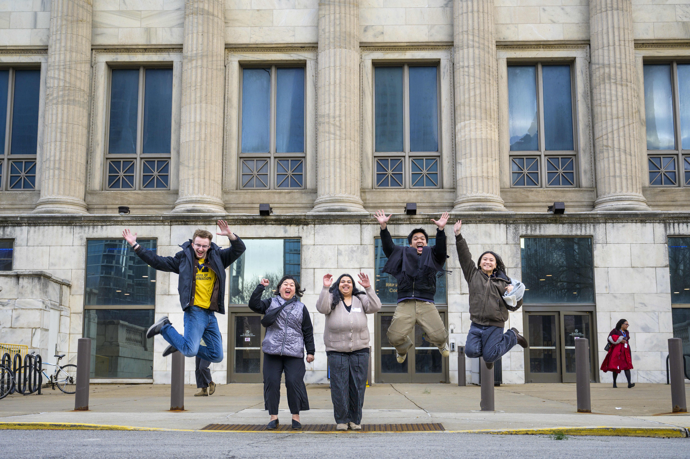

Close your project responsibly, evaluate your outcomes, and articulate your real-world experience for your future career.
The Power of Closing Well and Reflecting Deeply
A project is not complete simply because the final deliverable has been handed over. The final stages—closing,
reflecting, and translating—are what transform a transient project into lasting organizational value and personal career momentum.
Responsible handoffs ensure that partners are not left with abandoned tools or undocumented systems they cannot maintain. Simultaneously,
structured reflection forces you to pause and ask: What did I learn about my technical skills, my teamwork style, and the ethical impact
of my work? Without reflection, experience is just something that happened to you; with reflection, experience becomes expertise.
Learning to translate complex, messy project narratives into clear resume bullets and portfolio case studies is what turns your UMSI
education into your greatest professional asset.
Phase 4: After the Experience
Career Integration & Portfolios.

Revised Objectives
- Articulating Skills: Translate unscripted, complex project work into compelling resume bullets and interview responses.
- Portfolio Integration: Document your process, artifacts, key decisions, and measurable outcomes.
- Maintaining Networks: Keep professional touchpoints open with mentors, community partners, and teammates.
Featured Resources & Handouts
Congratulations! You've taken a significant step toward your learning and career development by completing your partnership experience. If you are in need of further resources or advice for your next steps - Reach out to the Engaged Learning Office.